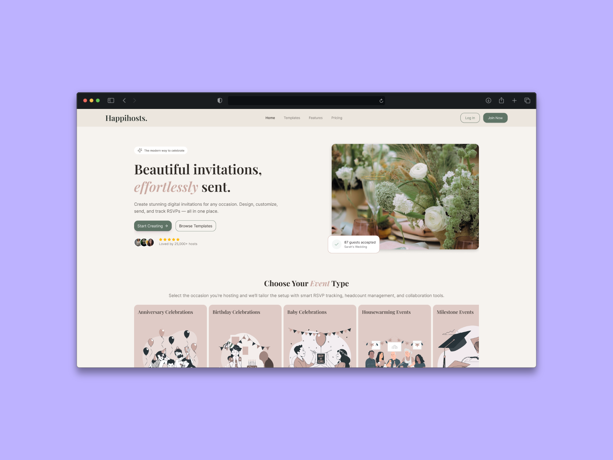
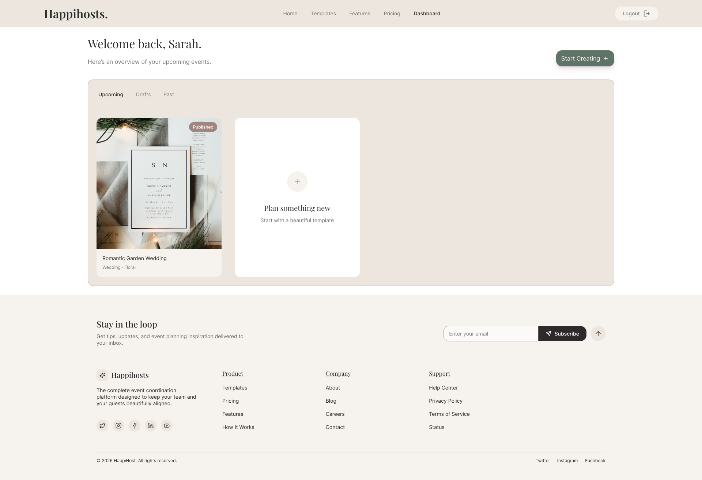
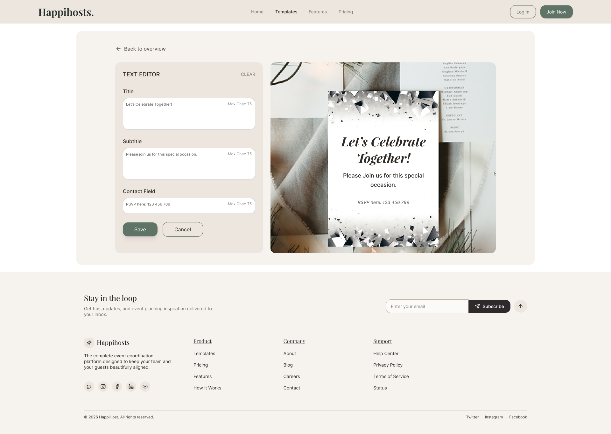
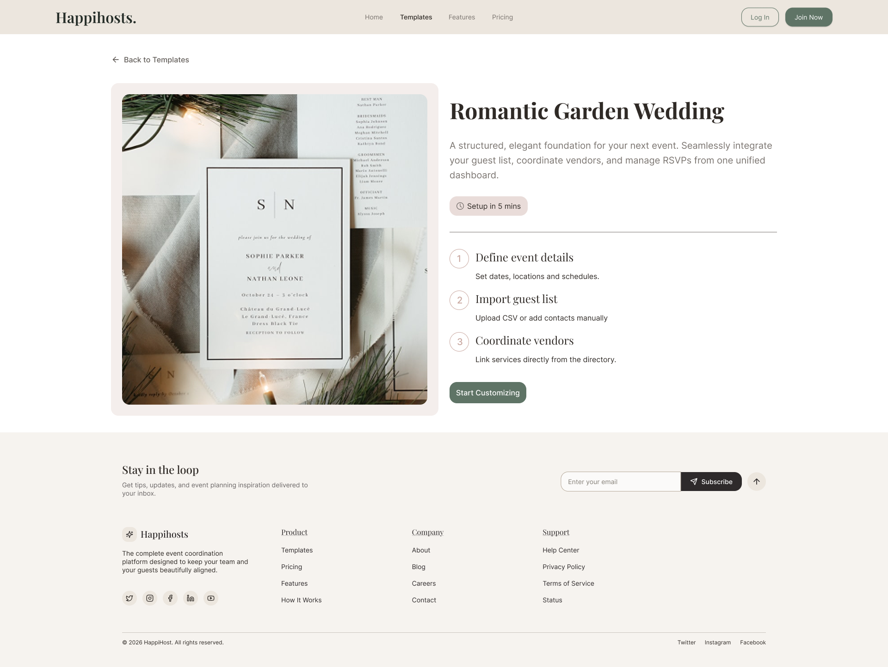
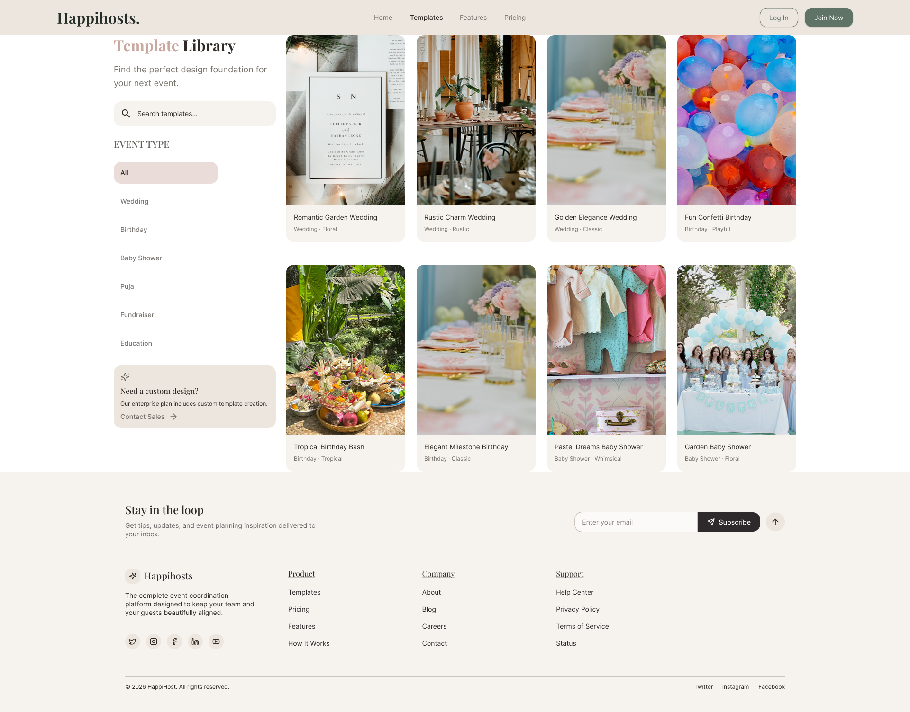

Happihosts
Happihosts is an event management platform designed to simplify how hosts organize events, invite guest and manage RSVPs. Event planning often involves multiple communication channels such as messaging apps, spreadsheets and manual coodination, which can lead to confusion and missed responses. This project explores the UX design of a digital platform that centralizes event management, invitation tracking and guest experience.
Problem Statement
Event hosts often manage invitations and RSVPs through multiple channels such as messaging apps, emails and phone calls. This fragmented approach makes it difficult to track guests responses and manage event logistics effectively.
Key Issues Identified:
- Invitation management was scattered across multiple platforms
- Hosts had difficulty tracking RSVP responses
- Guest headcounts were hard to manage
- Event updates required manual communication with guests
Design Goals
- Simplify event creation and management
- Provide a clear system for tracking RSVPs
- Enable collaboration between hosts and co-hosts
- Improve the guest invitation experience
UX Audit of the Existing Workflow
To understand how events were typically managed, I analyzed common workflows used by event organizers. The analysis highlighted several inefficiencies:
- Event invitations were shared through multiple communication channels
- RSVP tracking was inconsistent and often manual
- Hosts struggle to manage guest lists effectively
Ideation & Exploration
The ideation phase focused on creating a platform that simplifies event management while minimizing friction for both hosts and guests.
- Structured event creation workflow
- Centralized guest list management
- Simple RSVP process for guests
- Collaboration tools for co-hosts
Final Design
The final design focuses on creating a streamlined event management experience.





Expected Impact
- Better event organization
- More accurate guest tracking
- Improved communication between hosts and guests
Reflections & Learnings
This project helped me explore how digital tools can simplify event planning workflows and improve coordination between participants.